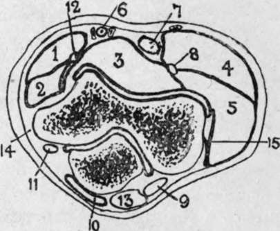
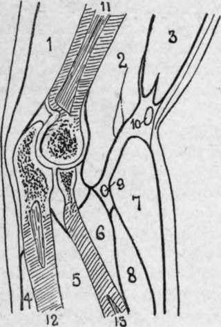

The Lower End Of The Humerus
Description
This section is from the book "Surgical Anatomy", by John A. C. MacEwen. Also available from Amazon: Surgical Anatomy.
The Lower End Of The Humerus
The Lower End OF The Humerus, flattened from side to side and curved with the convexity forwards, presents at the junction of the shaft and articular extremity, and above the trochlea, two fossae-one, the anterior and smaller, named the coronoid : the other posterior and larger, the olecranon fossa. These fossa- contain a small quantity of fatty tissue, separated from the bone by sacs of the synovial membrane, and receive the extremities of coronoid and olecranon processes in full flexion and extension respectively. The bone separating these fossae is extremely thin, and is sometimes perforated. The articular surface proper consists of capitellum externally and trochlea internally. The former, limited to the anterior aspect of the bone, is almost hemispherical, is covered by articular cartilage, and presents above a shallow depression, the radial fossa, which receives the rim of the radial head in full flexion. The latter is separated from the capitellum by a shallow groove, and presents a surface marked by a deep rounded depression, which winds spirally round the lower end of the humerus from behind, down, forwards, and inwards. Further, its plane is not at right angles to the shaft, but slopes down and inwards.
Fig. 52.-Outline Diagram of Transverse Section of Elbow. (After Braune.)
1. | Pronator teres. | 6. | Brachial vessels. | 11. | Ulnar nerve. |
2. | Flex, carpi rad. | 7 | Biceps tendon. | 12. | Median nerve. |
3 | Brach. ant. | 8. | Radial nerve. | 13 | Triceps tendon. |
4 | Supinator longus. | 9 | Anconeus. | 14. | Int. lat. ligt |
5 | Ext. carpi rad. long. | 10. | Bursa. | 15 | Ext. lat. ligt. |
The upper end of the radius articulates with the capitellum by a concave depression on the head, contact being greatest in semiflexion and least on extension. The head as a whole is circular in outline, and articulates with the lesser sigmoid notch of the ulna, to which it is held by the orbicular ligament. The head is connected to the shaft by the slightly constricted neck.
The upper end of the ulna articulates With the humerus by the great sigmoid cavity, to which its surface is adapted, presenting a median longitudinal rounded crest, which divides the surface into an inner portion slightly concave transversely, and an outer slightly convex transversely. The sigmoid cavity as a whole is roughly hemispherical, and has been likened to the Greek letter w, owing to its frequently presenting a slight transverse ridge at the junction of the olecranon process above with the coronoid process below. The olecranon process is widest above, but constricted below, while the coronoid process presents on its outer surface the lesser sigmoid cavity by which it articulates with the radial head. The ligaments of the elbow-joint, consisting of anterior, posterior, and lateral, form a complete capsule for the joint. The anterior ligament is thin, and is attached to the humerus in a curved line, including the coronoid and radial fossae, and extending thence toward the condyles, while below it is attached to the anterior margin of the coronoid process, the orbicular ligament, and the neck of the radius. It provides origin for some fibres of the brachialis anticus. The posterior ligament is the weakest, attached above to the humerus, enclosing the olecranon fossa, and below to the superior and external aspects of the olecranon, the orbicular ligament, and neck of the radius. The subanconeus portion of the triceps is attached to it. The internal lateral ligament is the strongest, and is triangular in outline, the apex being attached to the an tero-inferior aspect of the internal condyle, while the base is attached anteriorly to the inner border of the coronoid, and posteriorly to the inner border of the olecranon, and to the bony ridge between these points. The external lateral ligament extends from the external condyle to the orbicular ligament and neck of the radius. Accumulations of fluid in the elbow-joint show most readily through the weak anterior and posterior ligaments. Flexion of the joint is chiefly prevented by contact of the soft parts, while overextension is prevented at first by the muscles and ligaments, and not by osseous contact, and in overextension, and particularly in lateral movements, the internal lateral ligament generally suffers most.
The superior radio-ulnar joint, together with the inferior, permits of the movements of pronation and supination. It consists of the articulation between the lesser sigmoid cavity of the ulna and radial head, together with the orbicular ligament. The latter is attached anteriorly and posteriorly to the lesser sigmoid cavity, forms four-fifths of a circle, and is cupped superiorly for the neck of the radius. A common synovial membrane lines both elbow and superior radio-ulnar articulations. Superiorly the membrane dips into both olecranon and coronoid fossae, and inferiorly it surrounds the upper part of the neck of the radius. The elbow-joint is a frequent seat of tubercular disease, swelling frequently first appearing round the margins of the olecranon, and pointing sometimes ultimately in the same region. The limb tends to become semiflexed, as this is its position of greatest capacity, while the musculo - spiral and musculo - cutaneous nerves, which supply both the joint itself and some muscles controlling its movements, may tend by reflex irritation to produce muscular rigidity. The ulnar nerve may be pressed on and produce pain, referred to the little finger and inner side of ring finger. Although the whole head of the radius is surrounded by the same synovial membrane, it generally escapes infectio/i at least until a late stage. Practically the whole lower humeral epiphysis is within the joint, but only a portion of the upper epiphysis of the ulna.
In such cases, excision of the elbow is performed through a vertical posterior incision, extending above and over the olecranon. The incision is made down to the bone, the soft parts are shelled to either side by a periosteal elevator, the olecranon is cut off at its base, and the joint freely opened, examined, and the diseased parts removed. The head of the radius can generally be left intact, but it is desirable to remove the whole lower epiphysis of the humerus, cutting through the line of the coronoid and olecranon fossae. In this way no external soft parts are cut, the muscles retain their attachment to the triceps aponeurosis, which has only been split, and excellent movement is obtained, pronation and supination, flexion and extension, being generally perfect.
Fig. 53. -Longitudinal Section of Elbow. (After Braune.)
1. | Triceps. | 6. | Sup. brev. | 10. | Median cephalic vein |
2. | Bradi, ant. | 7. | Sup. longus. | 11. | Humerus. |
3. | Biceps. | 8. | Ext. carp. rad. long. | 12. | Ulna. |
4. | Ext. carp. uln. | 9. | Radial nerve. | 13. | Radius. |
5. | Flex, profund. dig. |
Fractures of the lower end of the humerus have already been dealt with (see p. 401).
The olecranon process is generally fractured by direct violence, the fracture occurring through the constricted neck. As a rule, displacement is slight, owing to the dense triceps aponeurosis, but the joint is often involved from fracture, extending through the articular cartilage. In such cases it is generally best to cut down and wire the fragments. A small epiphysis at the apex of the olecranon, which joins the body about the seventeenth year, has occasionally been separated, considerable displacement resulting. Fracture of the coronoid is very rare. Fracture of the radial head is rare, save in severe injury, and is generally associated with dislocation. The upper epiphysis of the radius joins the shaft at seventeen, and is very rarely separated, being within the orbicular ligament.
Continue to: